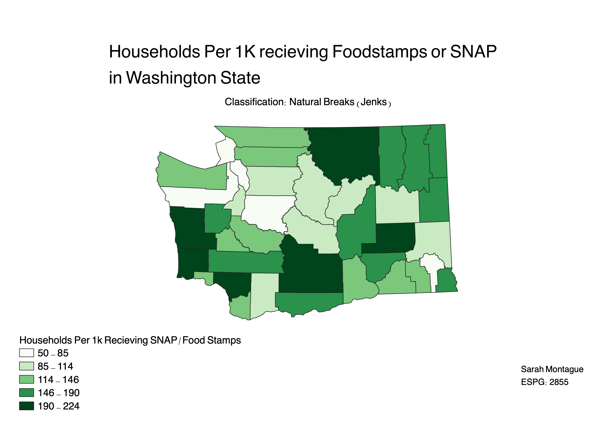
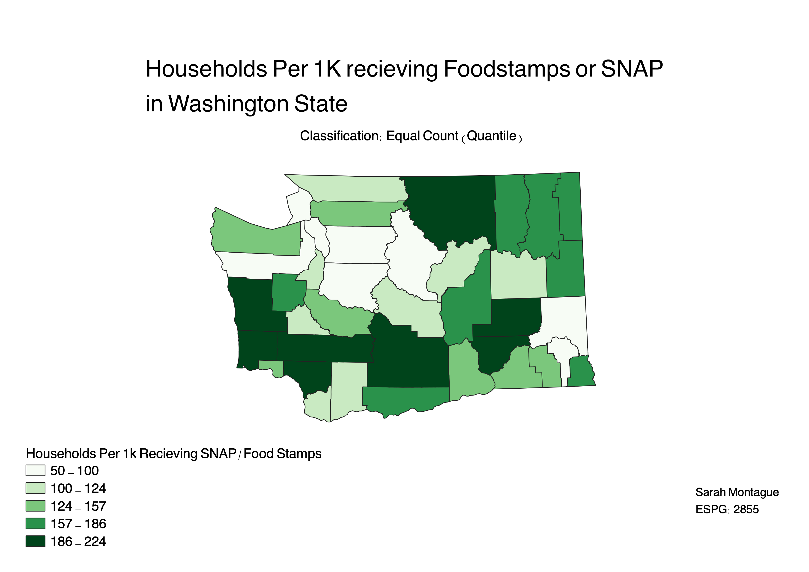
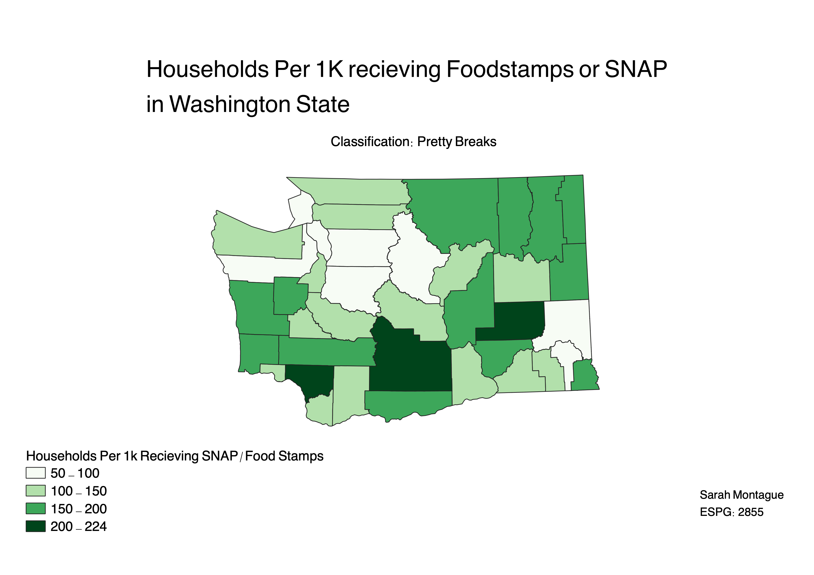

Homework 6, part 2: Census data ratios and categories
In this project I categorized data in the form of a ratio three different ways in QGIS. I categorized it by Natural Breaks (Jenks), Equal Count (quantile), and by Pretty Breaks. The ratio I used was the number of households per 1k households that recieve food stamps and/or SNAP. I used this ratio because it helps account for the different populations of the counties. The counties all have different numbers of households and with a higher population likely comes a higher number of households on food stamps/SNAP. Using a ratio accounts for different populations having an impact on understanding on how much different county's populations are allocated food stamps/SNAP.
Natural Breaks
This categorization has a fairly even distribution in each category. A pro of this categorization is that it groups data together that is similar so you can see where data tends to pool. A con of this categorization is that it does not account for the data being evenly distributed among the categories.

Equal Count (Quantile)
This categorization divides data into categories that all have an equal number of data points in them. A con of this categorization is that some categories have larger ranges and some have smaller ones, meaning that the categories are not as specific. A pro of this categorization is that the map is that it prevents the possibilty of a lot of data points being in one category and a map being moslty one category.

Pretty Breaks
This categorization divides data into categories that have almost equal and "pretty" intervals. This could make the map more digestable because the different colors represnt intervals that are numbers we can easily imagine. I did not alter the intervals that QGIS suggested so I could fairly compare the categorizations. This categorization only created 4 categories, while the others created 5. This means that the categories are less specific. There is no consideration for the distribution of data.

Data used for this project
Census Data